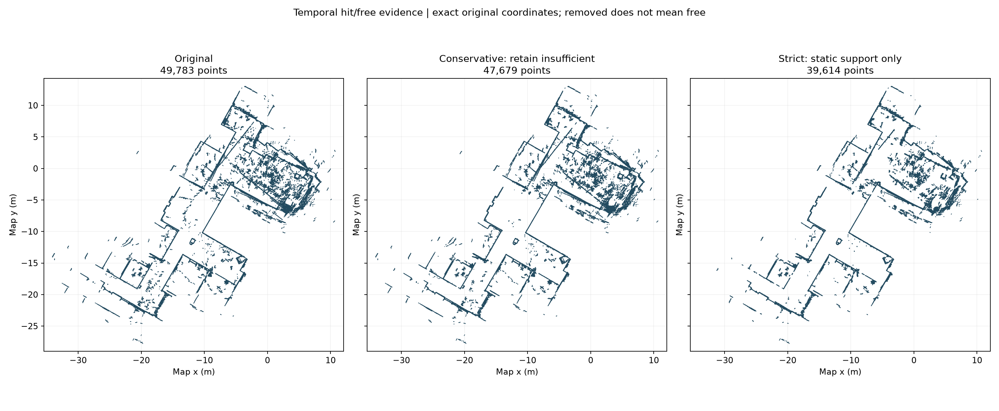

Original reference
Unfiltered reference; original observations and map preserved.
Open English viewerRemove inconsistent observations using time and visibility. Fixed furniture is preserved when supported by the recorded measurements. All map coordinates and poses remain unchanged.
Unfiltered reference; original observations and map preserved.
Open English viewerDefault cleanup view: remove strong temporal conflicts; retain insufficient evidence.
Open English viewerStricter inspection view: exclude ambiguous or insufficient persistence evidence; some real structures can disappear.
Open English viewerThe conservative view retains points without enough evidence. The strict view also excludes them. Removed points are not automatically moving people, and removal never creates free space in the companion grid.

| Map | LiDAR points | Accepted /800 | Stable /100 |
|---|---|---|---|
| Original | 49,783 | 283/800 | 11/100 |
| Previous occupancy filter | 30,165 | 332/800 | 29/100 |
| Conservative temporal filter | 47,679 | 286/800 | 16/100 |
| Strict temporal support | 39,614 | 271/800 | 18/100 |
Full-map repeat-observation tests with correlated data; no physical accuracy reference. The previous occupancy-supported map remains stronger on these aggregate counts and is preserved. Conservative is the default cleanup view, not a new accuracy winner. Read paired failures and limitations before selecting a localization target.
Method and reproduction · Detailed localization check · Camera evidence · Temporal evidence examples · Cluttered room detail
PCD + YAML + PGM downloads: Conservative combined PCD / LiDAR PCD / YAML / PGM. All distances are in metres.